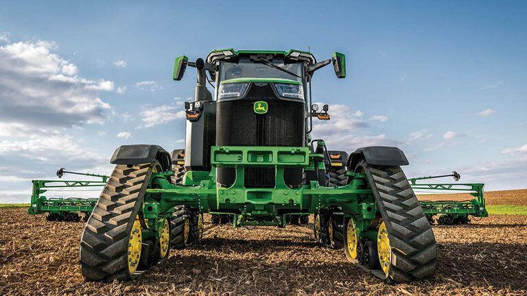

Price:$687,700 USD + TVA 10%
8RX 410
Tractor
- Putere maximă 443 CP (326 kW) (ECE-R120) + 15 CP (11 kW) IPM
- Motor de 9,0 litri cu 6 cilindri
- 18,7 t şi ampatament 3.235 m
- Acum cu o cabină mai mare şi mai confortabilă
CommandView Cab cu un nou nivel de vizibilitate

Mai mult cu mai putin
Transmisia eAutoPowr™, disponibilă pentru modelele 370 și 410 ale tractoarelor 8R, 8RT și 8RX, are un design simplu, cu mai puține piese complexe. Am înlocuit modulele hidraulice cu componente electrice pentru a obține performanțe, fiabilitate și confort maxime.
Acestea dispun de generatoare de motoare electrice fără perii, răcite cu lichid, care nu necesită întreținere. Utilizarea componentelor electrice în locul modulelor hidraulice simplifică proiectarea, crește eficiența, reduce piesele de uzură și prelungește durata de viață a transmisiei.
Performante maxime
eAutoPowr™ este cea mai puternică și adaptabilă opțiune din transmisiile Seriei 8, îmbinând eficiența AutoPowr™ cu puterea e23™. Schimbarea simplă a vitezelor, cu componente electronice de putere cu stare solidă, oferă cuplu instantaneu, pentru cea mai lină deplasare chiar și în cele mai dificile aplicații.
Pornirea electrică oferă putere și cuplu imediate, permițând schimbări de direcție mai rapide și mai line și viteze precise ale avansului lent, datorită utilizării motoarelor electrice în locul modulelor hidraulice.
Confort maxim
Dispunând de interfața CommandPRO™ identică cu AutoPowr™, eAutoPowr™ oferă toate funcțiile de confort cunoscute ale CommandPRO și configurare ușoară prin intermediul afișajului G5Plus CommandCenter™. Motoarele sale electrice reduc zgomotul din cabină cu 23% în comparație cu modulele hidraulice.
Generarea de energie electrica
eAutoPowr permite transferul unei puteri de până la 100 kW 480 V c.a. pentru consumatori externi prin intermediul unei prize AEF opţionale. Această putere electrică poate fi utilizată, de exemplu, pentru a alimenta punțile motoare de la instrumente. Punțile alimentate electric asigură o creștere semnificativă a tracțiunii, o reducere a alunecării roților și prevenirea balastării. Acest lucru permite un randament mai mare al suprafeței prin utilizarea unor instrumente de încorporare mult mai late, pentru costuri mai reduse ale aplicațiilor per hectar, asociate cu o protecție mai ridicată a solului.
Opinii de pe teren
“Zgomotul din cabină este mai redus decât cel cu care am fost obișnuiți la Seria noastră 8R curentă” Christian Sommerlund, JSJ-Agro, Danmark
Profesioniștii care au utilizat deja eAutoPowr™ sunt încântați. Convingeţi-vă.
Confort in rulare
Stăpânirea puterii tractoarelor din seria 8R este simplă, graţie noului joystick CommandPRO şi celor 11 butoane reconfigurabile ale acestuia. Reprezintă cea mai bună interfaţă cu şoferul, pentru a face fiecare zi chiar şi mai confortabilă şi productivă.
Atât de mult spaţiu, atât de puţin zgomot, atât de mult confort. Pasiune pură pentru detalii. Bine aţi venit la noua cabină 8R, mai mari şi chiar mai confortabile decât oricând.
Seria 8RX. Imposibil de oprit
Dacă tasarea minimă a solului este o prioritate pentru dvs., nu există niciun motiv pentru care să nu alegeţi 8RX. Este ideal pentru terenurile dificile și solele în pantă. De asemenea, veți beneficia de geamuri cu o vizibilitate ridicată.
Designul îndrăzneț al tractoarelor din seria 8R/RT/RX transmite aspectele de care sunt în stare: puterea de tracțiune care nu se oprește pentru nimic și tehnologie care face ca agricultura modernă să avanseze.

SPECIALIST ÎN PROTEJAREA SOLULUI
TRACTOARE 8RX
Proiectată pentru o protecție maximă a solului în toate condițiile, seria 8RX garantează performanțe puternice, având grijă și de câmpurile dvs.
Este un lucru bine știut: Modul în care vă tratați solul vă afectează direct randamentul potențial pentru anii următori. De fapt, studiile au demonstrat o îmbunătățire a randamentului potențial cu până la 6,8% atunci când se schimbă sistemul de producție cu cel cu șenile. Chiar dacă veți obține doar 2-3%, merită să luați în calcul o schimbare.
Anii secetoși necesită o structură sănătoasă a solului care poate stoca fiecare picătură de precipitații, astfel încât culturile să se poată dezvolta și să dispună de apă. Acest lucru este posibil doar dacă anii ploioși sunt gestionați într-un mod corespunzător. Cu toate acestea, intervalele de timp pe parcursul anilor umezi pot fi foarte mici, iar sincronizarea devine esențială pentru creșterea plantelor și calitatea culturilor. Prin urmare, este esențial să dispuneți de un adevărat specialist în echipa dvs. care să afecteze cât mai puțin solul în timp ce asigură tractarea instrumentelor dvs. de mari dimensiuni. În comparație cu modelele cu 2 șenile, seria 8RX este mult mai puțin sensibilă la anumite tipuri de sol, asigură un nivel remarcabil de tracțiune pe terenuri înclinate, plus stabilitate și nu provoacă nicio formare de berme la sol în timpul întoarcerilor.
SPECIFICAŢII 8RX
A | AMPATAMENT
3235 mm
B | LUNGIME TOTALĂ
lungime de 6572 mm, măsurată de la suportul pentru greutăţi frontal la cuplajul spate
C | ÎNĂLȚIME TOTALĂ
3636 mm, măsurată de la suprafaţa şoselei până la planul cel mai de sus al girofarului
D | LĂȚIME TOTALĂ
2997 mm, măsurată cu o spaţiere a benzii de rulare de 2,23 m, şenile spate de 76,2 cm și față de 60,96 cm